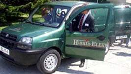
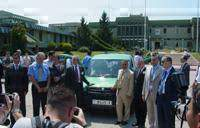
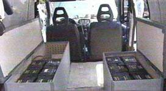
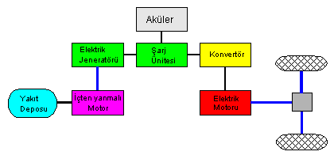

|
Türkiye
Bilimsel ve Teknik Araþtýrma Kurumu (TÜBÝTAK) Marmara Araþtýrma
Merkezi'nde (MAM) prototipi tamamlanan, ELÝT-1 ismi verilen
ve Türkiye'nin ilk hibrid (iki enerjili) elektrikli taþýtý
16 Temmuz 2003 günü tanýtýldý. TÜBÝTAK MAM Baþkaný Prof. Naci
Görür, tanýtým toplantýsýnda yaptýðý konuþmada, elektrikli
taþýt projesinin çevre kirliliðinin önlenmesi ve enerji tasarrufu
açýsýndan büyük önem taþýdýðýný söyledi.
Yeni
projeyle, özellikle Ýstanbul büyükþehir Belediyesi'nin yakýndan
ilgilendiðini bildiren Görür, "Ýstanbul'da 7 bin 200 belediye
otobüsünün olduðunu ve günde 50 ton yakýt harcadýklarýný düþünürsek,
gerçekten önemli bir çalýþma" dedi.
TOFAÞ Türk Otomobil Fabrikasý A.Þ. adýna konuþan FIAT Uluslararasý
Ýþ Geliþtirme Baþkaný Jan Nahum da, Türkiye'nin 50 yýlda sanayileþme
alanýnda büyük geliþmelere imza attýðýný belirterek, "Globalleþen
dünyada dýþa açýlan Türkiye, bir zamanlar kendisinden uzakta
olan geliþmiþ ülkeleri sanayi ve teknoloji alanýnda yakaladý"
dedi.
Türkiye'nin
otomotiv sektöründe ithalata dönük sanayiden ihracata yöneldiðine
iþaret eden Nahum, "Türkiye, Avrupa'nýn otomotiv üretim merkezi
haline dönüþtü. Dünya Türkiye'ye ihtiyaç duyuyor. Deneyim
ve yetenek var, bunu teknolojiye dönüþtürmek gerekiyor" diye
konuþtu.
Konuþmalarýn
ardýndan Prof. Naci Görür, projeye desteklerinden ötürü Jan
Nahum'a ve FNNS A.Þ. Genel Müdürü Hüseyin Esenergül'e teþekkür
plaketi verdi. Daha sonra Nahum, MAM kampüsü içerisinde taþýtýn
test sürüþünü yaptý.
MAM
Enerji Sistemleri ve Çevre Araþtýrma Enstitüsü tarafýndan
Aðustos 2002 yýlýnda baþlanan proje uyarýnca, TOFAÞ üretimi
DOBLO marka taþýt, 11 aylýk bir çalýþma sonucunda hibrid elektrikli
taþýt haline dönüþtürüldü.
130 kilometre hýz yapabilen, egsoz emisyonu ve gürültüsü yok
denecek kadar az olan taþýttaki elektrik motoronun üretken
frenleme (regenerative braking) yapmasý sayesinde, günümüzde
araçlarda frenleme sýrasýnda kaybolan enerjinin bir kýsmý
geri kazanýlarak akülerde depolanýyor.
Þehiriçi trafik sýkýþýklýklarýnda bekleme anýnda, elektrik
motorunun çalýþmasýna ihtiyaç duyulmamakta, böylece enerji
tasarrufu saðlanýp taþýtýn verimliliði artýyor. Hibrid elektrikli
taþýtlar, enerji tasarrufu yapýlmasý, hava ve gürültü kirliliðinin
önlenmesi açýsýndan, büyük þehirlerdeki ulaþým için önemli
bir alternatif olarak gösteriliyor...
Tasarým
detaylarý: (Bu bölüm 19-08-2003 tarihinde
MAM'nden alýnan ek bilgiler doðrultusunda habere dahil edilmiþtir)
- Saðdaki
þemada görüldüðü gibi, ELÝT-1 aracýnda 2 silindirli ve benzinli
içten yanmalý bir motor elektrik jeneratörünü (AC asenkron)
tahrik etmektedir.
- Prototip
araçta 25 adet 12 V, 60 Ah sulu tip kurþun asit aküler kullanýlmýþtýr.
- ELÝT-1,
tek tahrik motorlu (AC asenkron) seri hibrid bir araçtýr
ve elektrik motoru transmisyon aracýlýðý ile ön iki tekeri
tahrik etmektedir.
- ELÝT-1'in
tasarýmýnda seri hibrid elektrikli araç prensipleri dikkate
alýnmýþtýr. Sistem bazýnda Dünya'daki uygulamalarýndan bir
farký yoktur. Sadece uygulandýðý araç, güç, performans ve
boyut olarak diðerlerinden farklýlýk göstermektedir.
- Yapýlan
yük ve tasarým hesaplarýna göre sadece elektrik motoru,
güç elektroniði ve içten yanmalý motor ithal edilmiþtir.
- ELÝT-1'in
tasarýmýnda kullanýlan bilgisayar programlar þunlardýr;
Advisor, Matlab ve araç yük hesaplarý için Excel'de hazýrlanmýþ
bir program.
- Yakýt
verimliliði, hibrid elektrikli aracýn tüm özellikleri dahil
yaklaþýk % 50 seviyesindedir (þehir içi beklemeler, frenlemeden
kazanýlan enerji, benzinli motorun sadece ihtiyaç duyulan
enerjiyi saðlayacak kadar küçük olmasý ve sürekli çalýþmamasý,
vb.)
- Sistem
montajý, TÜBÝTAK-MAM'da yapýlmýþtýr.
FNNS
için Hibrid Elektrikli Muharebe aracý geliþtirme projesi:
TÜBÝTAK Marmara Araþtýrma Merkezi'ne, zýrhlý muharebe ve mini
tank araçlarý için proje hazýrlatan FNNS Savunma Sistemleri
A.Þ. firmasý Genel Müdürü Hüseyin Esenergül de, "TÜBÝTAK'ýn
elektrikli taþýt üretme projesi ilgimizi çekti. Bu yüzden
biz de zýrhlý muharebe aracý ve mini tank projesi için iþbirliði
yapýyoruz" dedi.
MAM Enerji Sistemleri ve Çevre Araþtýrma Enstitüsü Müdürü
Mustafa Týrýs ise elektrikli araçlarýn askeri açýdan da büyük
önem taþýdýðýný belirterek, þunlarý kaydetti:
"Askeri açýdan sessiz, egsozdan termal iz oluþumu yok. Ayrýca
geleceðin silahlarýnýn elektrik ve elektronikten oluþacaðýný
düþünürsek önemi daha iyi ortaya çýkýyor. Avrupa'da muhtelif
alanlarda toplu taþýmada kullanýlan elektrikli araçlar sessiz
sürüþ kabiliyeti, enerji tasarrufu ve uzaktan kumanda edilme
kolaylýðý gibi avantajlara sahip."
Týrýs, TOFAÞ A.Þ. için yürütülen ELÝT-1 Hibrid Elektrikli
Araç Projesi'nin yaný sýra FNNS Hibrid Elektrikli Muharebe
aracý projesinin de devam ettiðini sözlerine ekledi.
Kaynak: http://www.ntvmsnbc.com/news/224796.asp
Daha
Fazla Bilgi için:
www.mam.gov.tr/enstituler/escae
> TÜBÝTAK / MAM Enerji Sistemleri ve Çevre Araþtýrma Enstitüsü
|